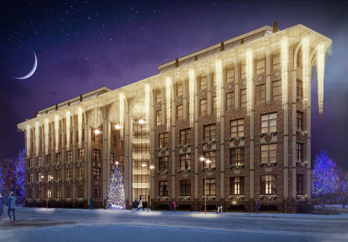
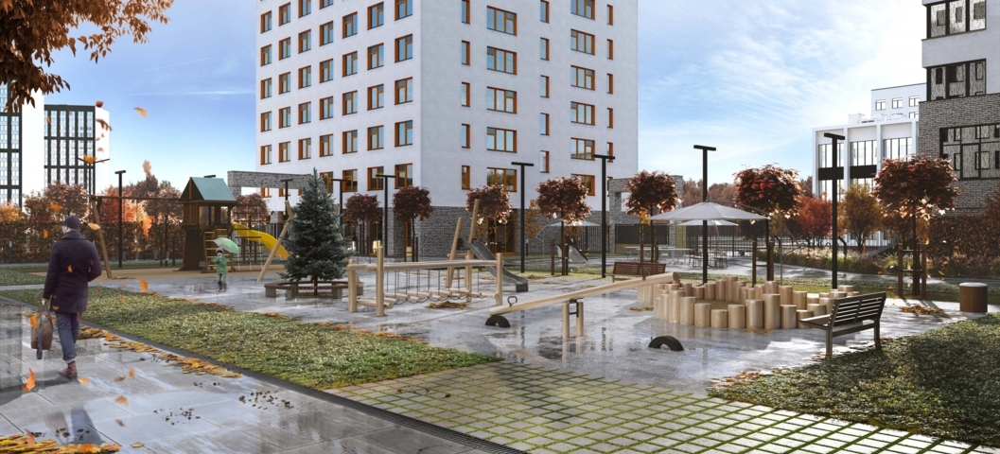

С целью воссоздания моделей будущих домов и коттеджей, которые пока еще не существуют в реальной действительности, сегодня все чаще используется такая очень популярная услуга, как 3d визуализация дома. В результате, с применением специальных программ трехмерной комплексной модели жилья, возникает конкретное визуальное представление объекта со всеми мельчайшими подробностями. Полученная модель впоследствии также может использоваться для составления документов или самых различных смет.
Популярная услуга 3d визуализация домов и коттеджей помогает сэкономить достаточно большие деньги, так как клиентам не нужно будет переплачивать на каждом отдельном этапе: вполне реально снизить возможность возникновения архитектурных, технических, а также дизайнерских ошибок. Так как благодаря современному моделированию можно будет увидеть реальную модель будущего коттеджа, то подрядчикам очень сложно будет сделать халтуру, а процедура контроля за всеми работами будет в значительной степени облегчена. В момент создания будущих современных трехмерных проектов могут применяться самые различные схемы, чертежи, фото, наброски или рисунки. Проекты по визуализации дома могут включать не только жилую, но также и прилегающую территорию, например, для создания общего вида участка с домом. 3d визуализация коттеджа или дома может создаваться на основе уже готовых проектов, но все же лучше с самого начала делать свой собственный проект коттеджа, так как именно данный вариант помогает создать дом своей мечты.
Создание максимально точных моделей жилых объектов и прилегающих к ним территорий. Полная реализация всех задумок архитекторов и дизайнеров: модель в полной мере передает все детали стен, крыши, окон согласно будущих размеров и конфигураций. Передача цветовых оттенков и текстуры жилья, что не позволяет упустить даже самые незначительные детали разрабатываемого интерьера коттеджа. Полное совмещение жилого здания с внешней средой, что открывает возможность видеть как свой будущий дом, так и окружающий ландшафт. Разработка уникальной панорамы на 360 градусов, а также с возможностью перемещения в любую точку предполагаемого объекта.